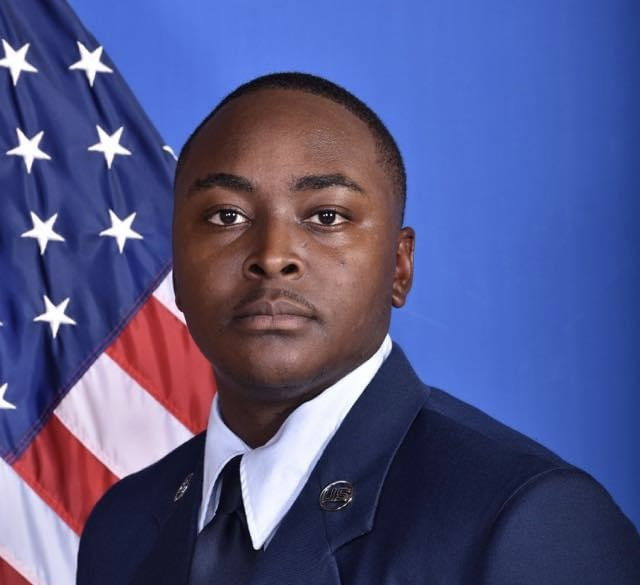

Daryl Hawkins

Summary
I am a retired Air Force veteran currently persuing a bachelors in cybersecurity and information assurance. I have a projected graduation of June 2025.
Education and Certifications
- CompTIA Security+(03 JAN 2024)
- CompTIA Network+ (28 OCT 2023)
- CompTIA A+ (23 AUG 2023)
- Lightning Force Academy - Team Cheif School (May 2021)
- Associates of Science, Information Systems Technology - Community College of the Air Force (AUG 2018)
Work Experience
Help Desk Supervisor - 86th Communication Squadron (USAF)
February 2021 - September 2022
- Lead 8 man first line tier 1 customer service center for $69M network, supporting 22k customers
- Triage trouble tickets using "Remedy" ticketing system
- Generate real-time staus reports/metrics to advise upper management
- Mangae and monitor change request program
- Manage and monitor security incidents
- Provision and manage enterprise user and organization accounts
- Manage authorised service interuptions for network maintenance
Cable and Antenna Maintenance Supervisor - 86th Communication Squadron (USAF)
September 2020 - February 2021
- Installaton and maitenance of fiber optic/copper network and infrastructure
- Fusion splicing
- Multicam connetors
- Rack mounted patch pannels
- Troubleshooting Fiber optic network
- Troubleshooting Copper network
Non-Commissioned Officer in Charge - 51st Communication Squadron (USAF)
September 2019 - September 2020
- Managed 12 man Cable and antenna shop
- Project management
- Contract officer representative
- Engage with customers
Cable and Antenna Supervisor - 85th Engineering and Installation Squadron (USAF)
March 2015 - September 2019
- Perform full scale network installations
- Project packages
- Project management
- Fiber optics
Cable and Antenna Technician - 96th Communication Squadron (USAF)
April 2012 - March 2015
- Installation of LANs
- Masintenance of existing cable infrastructre
- Perform PMI on antennas and tower structures
Skills
- Customer Service
- Office 365
- Fiber Optics
- Networking
- Nmap
- Wireshark
- MITRE
- Ticket triage
- Account Management
- Collaboration
- Linux
- Troubleshooting
- Project Management
Other